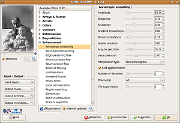

G'MIC
Dieser Artikel wurde für die folgenden Ubuntu-Versionen getestet:
Ubuntu 16.04 Xenial Xerus
Ubuntu 14.04 Trusty Tahr
Zum Verständnis dieses Artikels sind folgende Seiten hilfreich:
G'MIC  (GREYC's Magic Image Converter) ist ein sehr leistungsfähiges Kommandozeilen-Programm zur Grafikbearbeitung. Es verwendet eine eigene skript-basierte Programmiersprache zur Durchführung komplexer Bildbearbeitungsprozesse. Neben der Terminalversion existiert außerdem eine Integration in GIMP, mit der alle Funktionen komfortabel innerhalb der GIMP-GUI ausgeführt werden können. Entwicklungsgrundlage war das GREYCstoration-Programm/GIMP-Plugin zum Entrauschen von Bildern, das jetzt Teil von G'MIC ist.
(GREYC's Magic Image Converter) ist ein sehr leistungsfähiges Kommandozeilen-Programm zur Grafikbearbeitung. Es verwendet eine eigene skript-basierte Programmiersprache zur Durchführung komplexer Bildbearbeitungsprozesse. Neben der Terminalversion existiert außerdem eine Integration in GIMP, mit der alle Funktionen komfortabel innerhalb der GIMP-GUI ausgeführt werden können. Entwicklungsgrundlage war das GREYCstoration-Programm/GIMP-Plugin zum Entrauschen von Bildern, das jetzt Teil von G'MIC ist.
Installation¶
G'MIC ist in den Paketquellen vorhanden, installiert werden müssen die Pakete
gmic (Kommandozeilenversion)
gimp-gmic (Plugin für GIMP)
 mit apturl
mit apturl
Paketliste zum Kopieren:
sudo apt-get install gmic gimp-gmic
sudo aptitude install gmic gimp-gmic
Fertige Pakete[2], die sowohl die Kommandozeilen-Version als auch das GIMP-Plugin enthalten, finden sich auf der Projektseite  . Wer nur das GIMP-Plugin verwenden möchte, findet dort auch ein .zip-Archiv, welches heruntergeladen und in den Ordner ~/.gimp-2.x/plug-ins/ entpackt[3] werden muss. Danach steht das Programm beim nächsten Aufruf von GIMP unter "Filter -> G'MIC" zur Verfügung. Es kann nicht für "indizierte" Bilder verwendet werden, in dem Falle muss zunächst der Bildmodus (im GIMP "Bild -> Modus") verändert werden.
. Wer nur das GIMP-Plugin verwenden möchte, findet dort auch ein .zip-Archiv, welches heruntergeladen und in den Ordner ~/.gimp-2.x/plug-ins/ entpackt[3] werden muss. Danach steht das Programm beim nächsten Aufruf von GIMP unter "Filter -> G'MIC" zur Verfügung. Es kann nicht für "indizierte" Bilder verwendet werden, in dem Falle muss zunächst der Bildmodus (im GIMP "Bild -> Modus") verändert werden.
Ggf. behindern sich die .deb-Version und das entpackte Plugin; wer das Paket verwenden möchte, sollte vor Installation ein eventuell verwendetes Plugin entfernen.
Hinweis!
Fremdpakete können das System gefährden.
Benutzung¶
G'MIC bietet eine Vielzahl von Bearbeitungsmöglichkeiten, unter anderem arithmetische Operationen ("Arithmetic operators"), grundlegende Pixel-Bearbeitung ("Basic pixel manipulation"), Veränderungen der Farbbasis ("Color bases conversions"), geometrische Veränderungen ("Geometric manipulation"), etliche Bildfilterfunktionen ("Image filtering"), Werkzeuge zur Bilderstellung ("Image creation and drawing"), Batch-Bearbeitungen ("List manipulation"), 3D-Funktionen ("3D rendering"), sowie viele, z.T. sehr spezielle, Bildbearbeitungsoptionen ("Commands: Default custom commands").
Unterstützte Formate¶
G'MIC kann sehr viele Bildformate verarbeiten, u.a.:
2D-Schwarz-Weiß/Farb-Bilderformate: PNG, JPEG, GIF, PNM, TIFF, BMP ...
3D-Formate: DICOM, HDR, NII, PAN, CIMG, INR ...
Video-Dateien: MPEG, AVI, MOV, OGG, FLV ...
Standard-Dateiformate wie: DLM, ASC, RAW, TXT ...
3D-Objekte : OFF
Kommandozeilen-Syntax¶
Die allgemeine Syntax für die Bedienung auf der Kommandozeile[5] lautet:
gmic [file1 | instruction1 [arg1_1,arg1_2,..]] .. [fileN | instructionN [argN_1,argN_2,..]]
Das Programm verwendet einen eigenen Betrachter, in dem die Bilder angezeigt werden (z.B. zum Betrachten eines Bildes mit dem Aufruf "gmic <Bildname>". Die genaue Verwendung und Syntax der überaus komplexen Möglichkeiten erschließt sich über die Dokumentation des Programms (auch über die Manpage), am Ende finden sich etliche konkrete Anwendungsbeispiele.
|  |
| G'MIC-GIMP, Anisotropic smoothing |
G'MIC in GIMP¶
Im GIMP lassen sich die Funktionen unter "Filter -> G'MIC" aufrufen; dort stehen momentan (Version 1.3.5.1) 170 Filter zur Verfügung, eingeteilt in die Kategorien
About (Ausführliche Informationen zum Programm)
Arrays and frames (Anordnung und Rahmen)
Artistic (künstlerisch)
Colors (Farben)
Contours (Kanten)
Deformations (Verformungen)
Degradations (Rauschen)
Enhancement (Verbesserungen)
Layers (Ebenen)
Patterns (Muster)
Presets (Vorlagen)
Rendering (3D-Bearbeitung)
Sequences (Sequenzen)
Various (Verschiedenes).
Es lassen sich auch eigene Varianten erstellen (siehe "About -> Filter Designs" und "Various -> Custom G'MIC command"). Um die Filterliste für die jeweils verwendete Version zu aktualisieren kann im Hauptfenster unter dem Filterverzeichnis die Checkbox "Internet updates" aktiviert, und dann mit der Schaltfläche "Aktualisieren" die neuste Version heruntergeladen werden (wird im Homeverzeichnis unter .gmic_def.xxxx abgespeichert).
Einen Überblick über die Möglichkeiten des GIMP-Plugins bietet diese Übersicht auf der Projektseite.
Besonders hervorzuheben sind ggf. die Werkzeuge zur Entrauschung ("Enhancement -> Anitrosopic smoothing" (Screenshot), sowie "Patch-based smoothing"), außerdem die Möglichkeit, problemlos Copyright-Vermerke/Wasserzeichen in eigene Bilder zu integrieren ("Various -> Quick Copyright")
Aktuelles Plugin manuell installieren¶
Eine aktuelle Version des Plugins kann nachinstalliert werden, dazu empfiehlt es sich, eine bereits vorhandene Version zu entfernen:
sudo apt-get purge gimp-gmic
Das Plugin ist als 32-bit oder 64-bit auf der Projektseite verfügbar und wird als Archiv heruntergeladen. Das Archiv enthält die Datei gimp-gmic, welche an einem beliebigen Ort gespeichert werden kann (z.B. /opt/gmic-plugin/). Damit gimp das Plugin lädt muss ein symbolischer Link erstellt werden:
sudo ln -s /opt/gmic-plugin/gmic_gimp /usr/lib/gimp/2.0/plug-ins/gmic_gimp
Alternativen¶
Auf der Kommandozeile bietet ImageMagick sogar noch mehr Möglichkeiten zur Bearbeitung, allerdings existiert für das Programm keine GIMP-Integration.
Etliche der G'MIC-Filter sind allerdings auch in ähnlicher Form im GIMP bereits integriert, oder lassen sich über diverse weitere Plugins realisieren.
Links¶
Interview
mit David Tschumperele, dem Hauptentwickler der SoftwareHomepage
des EntwicklersKurzes Tutorial
zum EntrauschenBeispiel-Bilderstrecke
 auf flickr.com
auf flickr.com
- Erstellt mit Inyoka
-
 2004 – 2017 ubuntuusers.de • Einige Rechte vorbehalten
2004 – 2017 ubuntuusers.de • Einige Rechte vorbehalten
Lizenz • Kontakt • Datenschutz • Impressum • Serverstatus -
Serverhousing gespendet von